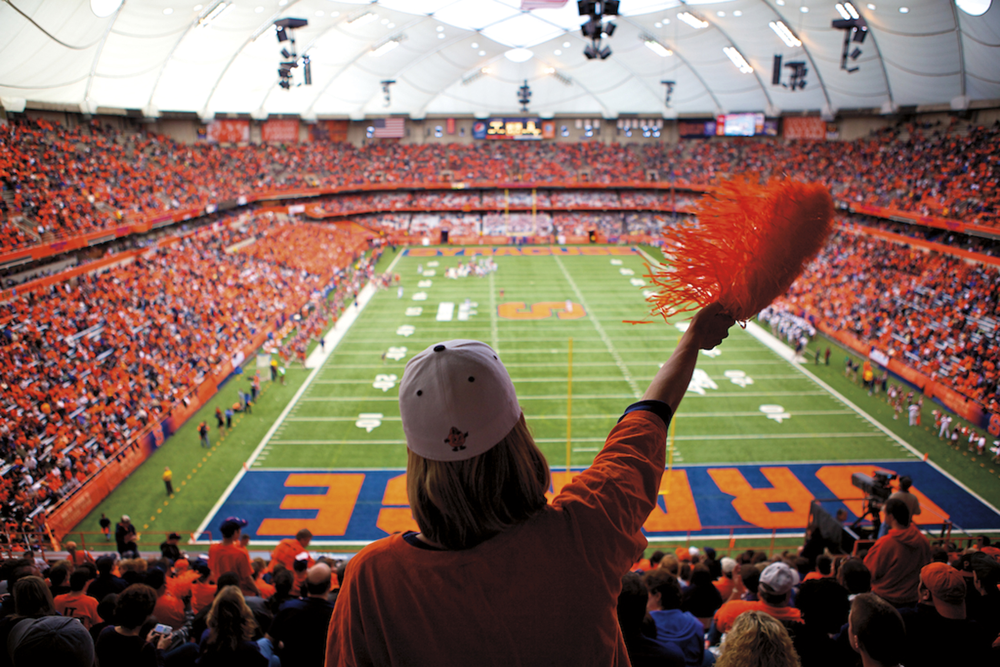

Syracuse Women's Basketball Team Takes the Court/ Photo by Pherit
Syracuse University Sports and Gender Inequality
SU says it wants to be a national leader when it comes to equity in athletics. An examination of coaches' pay at the university tells a different story.
Published on:
Syracuse University’s athletics department struggles with fair treatment and equal representation among its coaching staff.
"Syracuse University Athletics values a culture of Diversity, Equity, and Inclusion, and we look to be a national leader among our peers," states the Syracuse University Athletics department.
Yet male head and assistant coaches make significantly more than female coaches, according to our new analysis Department of Education’s Equity in Athletics data. Male head coaches at SU made a total of $7,915,302 in 2022 while female coaches made $1,623,640. That is $6,291,662 – or more than 79% – less. There’s also a large wage gap between male and female assistant coaches, with a difference of $3,801,358.
Pay disparities between male and female players often make headlines, like the U.S. women’s soccer team’s efforts to get paid as much as their male counterparts. But there’s less discussion regarding coaches, and it’s clear the inequity persists there as well, said Andrew Das in an article written for the New York Times.
Hofstra University Professor Lauren Hindman teaches sports management, organizational behavior, diversity, equity, and inclusion and researches wage gaps in the sports industry.
“The media portrayal of male and female coaches differs, impacting perceptions of coaching abilities and causing there to be fewer female than male coaches,” Hindman said. “Stereotypes and gender biases can lead to hiring decisions that overlook qualified men and women for coaching positions.”
Hindman said women’s sports are caught in a catch-22: they get less because they bring in less money, but they bring in less money in part because they are under funded.
“The explanation boils down to the fact that women’s sports don’t produce as much revenue, and therefore, why should they be paid as much?” she said. “What I say in response is that women’s sports don’t produce the same revenue because you don’t treat them like they should, right?”
Historically, women’s sports haven’t been as prioritized as male sports, and many find that watching women’s athletics isn’t as engaging. Since women’s sports don’t receive as much attention, colleges find that investing equal amounts of money into their sports is a waste. Syracuse University’s revenues for male teams is $90,467,244, while the revenue for the women’s teams is $13,461,874, according to the Department of Education’s Equity in Athletics data.
The shortage of female coaches has a significant impact, specifically on female athletes.
“From the time we’re kids, the people we see in those types of roles inform our worldview of who is going to be in those types of roles, and whether we might see ourselves in those types of roles in the future,” Hindman said. “You as a woman might not see yourself as being capable of being a fit or being someone that would get hired and have success in that type of position.”
It’s also important to note that female coaches primarily only coach female athletes. It’s rare to see a female even assist a male team. Only four out of the top eight men’s sports have female head coaches as of 2020. Women represented less than 15% of head coaches in men’s sports, according to USA Facts, utilizing data from the U.S. Department of Education’s Equity in Athletics data. There were no women as head coaches for men’s football, soccer, baseball, or basketball teams; however, 66% of women’s soccer head coaches, 33% of softball head coaches, and 43% of women’s basketball head coaches, according to USA Facts. Furthermore, in 2020, 95% of NCAA men’s sports had male head coaches, while women’s teams had less than half of that number.
Even though many colleges struggle with the same inequality issues as SU, Hindman highlights the University of South Carolina’s women’s basketball coach, Dawn Staley, and Stanford’s basketball coach, Tara VanDerveer, act as examples of successful female coaches who negotiated a better contract despite earning less than their male counterparts. They advocated for equal pay, leading the conversation about unequal pay to open up.

Game Day at the Dome/ Photo by Britten, Inc.
There is no simple solution to fixing this issue, but Hindman offers helpful suggestions: “I think it’s about future forward-looking strategic priorities. How are we talking about our women’s programs? How are we promoting them? How are we investing in them and flipping that switch away from thinking of them as this sort of less-than category? Even if we don’t think our language is creating that hierarchy.”
Hindman is hopeful that women’s sports and coaches will gain the recognition it deserves.
“There’s so much more room to grow,” she said. “I do think we’re headed in the right direction, but I think we’re also in this weird place with college sports, since the whole system seems to be about to crumble.”